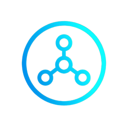

Equipo de OktanetAutomatización
Automatiza Oktavia con su API, Ansible y Python
Oktavia ya orquesta la red desde su interfaz y desde Argos. Muchos equipos de operaciones, además, viven en Ansible, en AAP o en sus propios scripts de Python. Este artículo muestra cómo usar Oktavia desde ahí, de cero, sin perder lo que la hace segura: la intención como fuente de verdad, la vista previa antes de guardar y el Gemelo Digital con una persona que aprueba.
La regla: automatizar alrededor del Gemelo, no a través de él
Oktavia es el único camino a la red. Un playbook o un script lee, propone y verifica: consulta el inventario y el cumplimiento, pide la vista previa de un cambio, guarda la intención y recibe el cambio propuesto en el Gemelo Digital. Nunca aprueba, aplica ni confirma en un equipo: eso lo hace una persona, con la validación previa y el commit confirmado de cada plataforma. No es una limitación del kit; es el diseño.
Paso 1 · Las llaves
Hay dos tipos de llave, cada una para lo suyo:
| Llave | Dónde se crea | Qué abre |
|---|---|---|
Llave con alcance del motor (okt_…) | La crea un administrador en el motor, atada a un tenant, de lectura o de escritura. | Inventario, cumplimiento, intención, métricas y la vista previa de un cambio. No guarda intención ni toca el Gemelo. |
Llave de automatización de la interfaz (oktui_…) | Integraciones → Llaves de automatización, sólo administradores. | Los flujos de servicios de cliente: vista previa, guardar y dar de baja. Nunca aprueba ni aplica. |
Las dos se muestran una sola vez, se guardan con hash, se revocan sin tocar las demás y cada uso queda en la bitácora. En los archivos no va ninguna: van en variables de entorno o en ansible-vault.
export OKTAVIA_URL=https://oktavia-motor.ejemplo:8000
export OKTAVIA_ORG=mi-tenant
export OKTAVIA_API_KEY=okt_… # llave con alcance del motor
export OKTAVIA_UI_URL=https://oktavia.ejemplo
export OKTAVIA_UI_KEY=oktui_… # llave de automatizaciónPaso 2 · Inventario dinámico
El kit de Ansible trae un plugin de inventario que lee los equipos del tenant y los agrupa por rol, sitio, tipo de sitio y plataforma. No hay un hosts que mantener: el inventario es el de Oktavia.
ansible-inventory --graph
@all:
|--@role_pe:
| |--pe-cdmx-01
|--@platform_xr:
| |--pe-cdmx-01
| |--p-core-01Paso 3 · Leer el cumplimiento y el estado
El playbook 01_lectura.yml arma un reporte con los equipos, el cumplimiento por prueba, las pruebas que fallan, los servicios de cliente y los vecinos BGP e IS-IS. Lo mismo en Python:
import os, requests
url, org = os.environ["OKTAVIA_URL"], os.environ["OKTAVIA_ORG"]
h = {"X-API-Key": os.environ["OKTAVIA_API_KEY"]}
q = {"organization_slug": org}
inventario = requests.get(f"{url}/api/inventory", headers=h, params=q, timeout=30).json()
resultados = requests.get(f"{url}/api/compliance/results", headers=h, params=q, timeout=60).json()
bgp = requests.get(f"{url}/api/metrics/bgp-peers", headers=h, params=q, timeout=30).json()La API devuelve los secretos como <oculto> a cualquier llave con alcance: un reporte no puede filtrar una comunidad ni una llave.
Paso 4 · Cambiar un parámetro con vista previa
Un cambio es un archivo con la ruta de la intención y el valor. El playbook 02_cambiar_parametro.yml pide a Oktavia la vista previa —las líneas CLI o el XML NETCONF que cambian en cada equipo— y se detiene sin guardar.
# cambios/ntp_ce.yml
oktavia_cambio:
descripcion: "NTP de los CE"
ruta: "by_role.ce.services.ntp.servers"
valor: ["192.0.2.10", "192.0.2.11"]
equipos: [ce-cliente-01, ce-cliente-02]ansible-playbook playbooks/02_cambiar_parametro.yml -e @cambios/ntp_ce.ymlLa ruta es la misma que se edita en Servicios: <alcance>[.<llave>].services.<servicio>…. Las listas se reemplazan enteras, igual que en la interfaz. Para ver el impacto antes de guardar en Python, se manda la intención candidata a POST /api/intended/preview-vars con la lista de equipos.
Paso 5 · Un servicio de cliente por playbook
Los flujos de Argos → Orquestación personalizada también existen como playbooks: 10_pseudowire.yml, 11_l3vpn_sitio.yml, 12_color_odn.yml y 13_multicast.yml. Cada uno recibe el servicio en un archivo y una acción:
# servicios/pseudowire.yml
oktavia_servicio:
customer: CLIENTE_A
name: CDMX-MTY-3
vlan: 102
subnet: 192.0.2.16/29
a: {pe: pe-cdmx-01, pe_interface: GigabitEthernet0/0/0/2, ce: ce-cliente-01, ce_interface: GigabitEthernet0/1}
b: {pe: pe-mty-01, pe_interface: GigabitEthernet0/0/0/2, ce: ce-cliente-02, ce_interface: GigabitEthernet0/1}ansible-playbook -i localhost, playbooks/10_pseudowire.yml -e @servicios/pseudowire.yml -e accion=preview
ansible-playbook -i localhost, playbooks/10_pseudowire.yml -e @servicios/pseudowire.yml -e accion=apply- preview valida y muestra lo que cambia; no guarda nada.
- apply guarda la intención y devuelve el cambio propuesto en el Gemelo, con su enlace.
- retire da de baja el servicio por el mismo camino.
Son idempotentes: si el servicio ya está, lo dicen y no hacen nada. En Python es el mismo llamado:
r = requests.post(f"{os.environ['OKTAVIA_UI_URL']}/api/argos/l2vpn",
headers={"Authorization": f"Bearer {os.environ['OKTAVIA_UI_KEY']}"},
json={"action": "preview", **servicio}, timeout=180)Después, una persona abre el cambio en el Gemelo Digital, revisa el diff, lo aprueba, corre la prueba y lo aplica. En IOS XR es commit confirmado: si la verificación no pasa, el equipo revierte solo. En Argos, cada flujo trae Hazlo con Ansible con el comando equivalente a lo que se llenó en el formulario.
Paso 6 · Verificar plantillas e intención
El playbook 03_verificar_plantillas.yml renderiza localmente las plantillas Jinja de Oktavia con la intención del tenant y compara el resultado con la configuración deseada de Oktavia, servicio por servicio. Sirve para entender cómo se arma la configuración y para revisar una extensión antes de publicarla. Sigue las mismas reglas que el motor: alcances en orden, objetos que se mezclan, listas que se reemplazan, y un sandbox donde la plantilla no puede llamar a Ansible.
Buenas prácticas
- Una llave por integración, de lectura salvo que de verdad necesite escribir. Rótela y revóquela al terminar un proyecto.
- Vista previa siempre. Corra
previewen el pipeline y dejeapplycomo paso aprobado por una persona. - Secretos en la bóveda. La intención lleva
<<vault:…>>, nunca el valor. - Direcciones de documentación en los ejemplos que comparta:
192.0.2.0/24,198.51.100.0/24,203.0.113.0/24. - Cierre el ciclo con la auditoría. Un cambio termina cuando el cumplimiento lo confirma, no cuando el playbook termina.
El kit completo —inventario dinámico, playbooks y ejemplos— viene con Oktavia. Los fundamentos de Ansible, APIs y NETCONF están en el curso gratuito de la Academia.